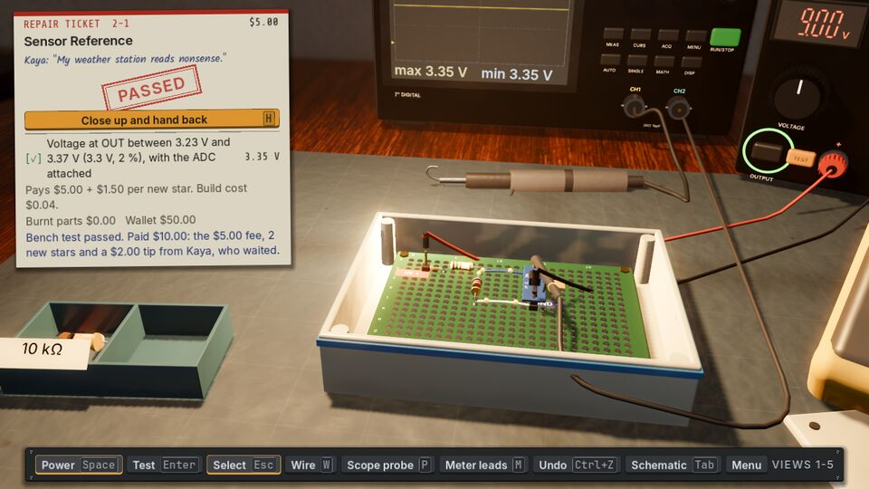
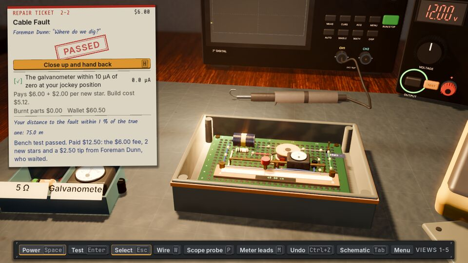
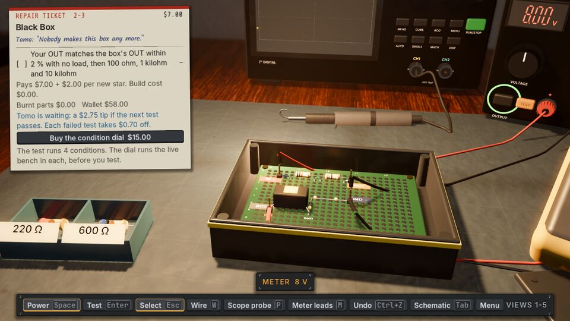
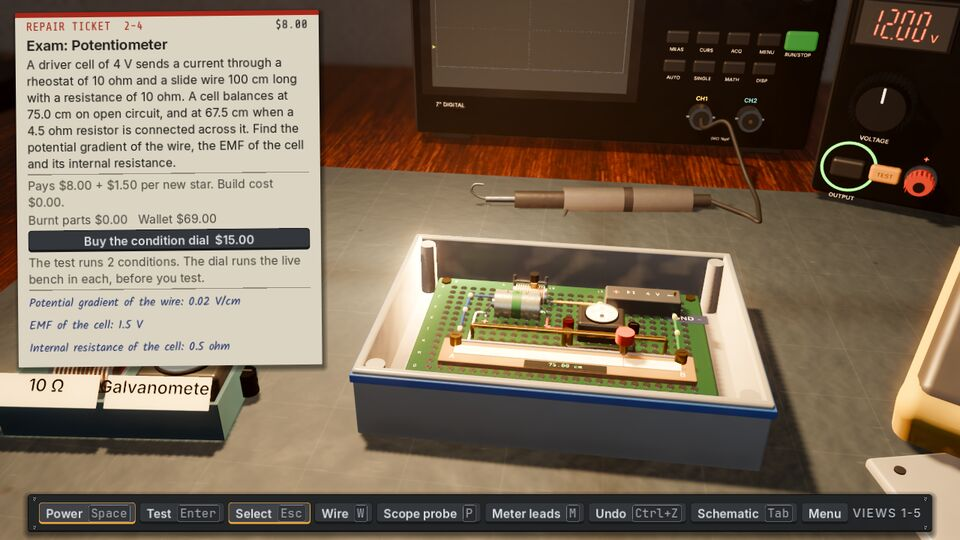

Wiki / Chapter 2
Chapter 2 · Divide & Measure
Wren's second page: four jobs at Stall 14, Lantern Lane. Divide a voltage for a sensor, find a cable fault with a bridge, copy a sealed box with one source and one resistor, then sit the slide-wire exam.
2-1 · Sensor Reference

Kaya's weather station reads its sensors with a converter chip (the ADC). The chip's input pin needs 3.3 V, give or take 2 %, and it behaves like a 10 kilohm resistor to ground, soldered between OUT and GND. The bench supply gives 9 V. It came in with a divider already on, 5.6 kilohm over 3.3 kilohm, and it reads low. Measure OUT, then fix the divider from IN down to GND with OUT in the middle, so that OUT is 3.3 V with the ADC attached. Wren: the divider formula in your head forgets the load, and the load is part of the circuit. A low-power divider earns the extra star.
On the bench: 5.6 k over 3.3 k into the ADC. Measure OUT with the meter before you swap anything.
The bench checks
- Voltage at OUT between 3.23 V and 3.37 V (3.3 V, 2 %), with the ADC attached
Parts tray: Carbon-film resistor 5 %
2-2 · Cable Fault

A telephone cable under the lane has shorted somewhere, and Foreman Dunn's crew wants to know where to dig. You can only reach the near end. The loop of cable out to the short and back is a resistor X of 0.1 ohm for every metre. Find X with a metre bridge, then turn it into metres. Wren: a bridge is a balance. Slide the jockey along the wire until the needle sits on zero, and the two ratios are equal.
On the bench: The cable reel is the loop X, the slide wire is the bridge. Wire them to the cell and the galvanometer, then slide the jockey until the needle sits on zero.
The bench checks
- The galvanometer within 10 µA of zero at your jockey position
Parts tray: Resistance box plug, Galvanometer
2-3 · Black Box

Tomo has a sealed sensor module that is no longer made, and needs a replacement built from one adjustable source and a series resistance. You cannot open the box. Measure its OUT terminal, then copy what it does: your OUT must match the box's OUT within 2 % with nothing connected and with 100 ohm, 1 kilohm and 10 kilohm loads. Wren: any network seen from two terminals is one source and one resistor, and the open-circuit voltage and the short-circuit current tell you both.
On the bench: The sealed box sits at the lower left. Meter it: volts open, then amps short. Then set the supply: key 4 shows its VOLTAGE knob.
The bench checks
- Your OUT matches the box's OUT within 2 % with no load, then 100 ohm, 1 kilohm and 10 kilohm
Parts tray: Carbon-film resistor 5 %, Trimmer, 1 k
2-4 · Exam: Potentiometer exam

A driver cell of 4 V sends a current through a rheostat of 10 ohm and a slide wire 100 cm long with a resistance of 10 ohm. A cell balances at 75.0 cm on open circuit, and at 67.5 cm when a 4.5 ohm resistor is connected across it. Find the potential gradient of the wire, the EMF of the cell and its internal resistance. Predict first, then build and probe.
On the bench: Predict first, then build the potentiometer and slide the jockey to the balance.
The bench checks
- Potential gradient of the wire
- EMF of the cell
- Internal resistance of the cell
- Galvanometer within 19.5 µA of zero at 75.0 cm (open circuit) and at 67.5 cm (shunted by 4.5 ohm)
Parts tray: Rheostat, Galvanometer